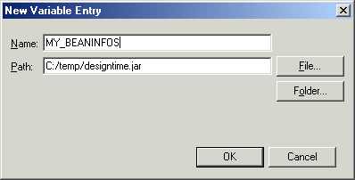
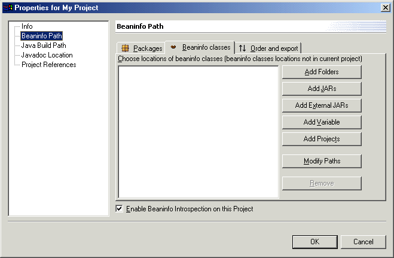

You can explicitly define the location of BeanInfo classes that
are external to the workbench by using a class path variable. The variable
can point to either a JAR file or a folder that exists in the file system.
- Click to open the Preferences window.
- Go to the page.
- Click New. The New Variable
Entry window opens.
- In the Name field, enter a name for the
new variable. For example, you might enter MY_BEANINFOS.
- In the Path field, enter the path of the
JAR file that contains your BeanInfo classes or the folder that contains the
package.

- You can click the File button to browse through
the file system and select the JAR file.
- If the BeanInfo classes are in a package that exists in the file system,
click the Folder button and browse to the parent directory
of the package.
- Click OK. The new variable
is created and can now be added to the BeanInfo path property of your project.
- Right-click your project and select Properties from
the pop-up menu.
- On the BeanInfo Path property page, go to
the BeanInfo classes tab:

- Click Add Variable. The
Class Path Variable Selection window opens.
- In the Variable Name field, enter the name
of the class path variable you defined earlier, or click Browse to
select the variable from a list of all defined variables. If the variable
is for a folder and the BeanInfo packages are in a sub-folder then you can
use the Path Extension field to select the subfolder.
Click OK.
- Click the Modify Paths button on the BeanInfo
classes tab of the BeanInfo Path properties page. This step is
necessary to name the packages that contain the BeanInfo classes.
- Click Choose Packages to select the names
of the packages that contain the BeanInfo classes. Depending on the structure
of the packages, you may be able to select them or you may have to specify
their names.
- Click OK to close the Modify Search Paths
window, and click OK to close your project properties
window.